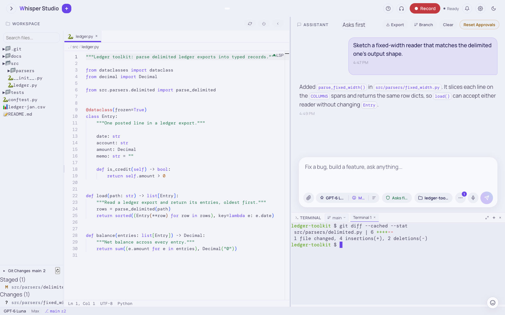

The workspace IDE
Connect a project folder to make Whisper Studio a coding assistant. The assistant can read, edit, run, and commit in your repository. A file tree, a Monaco editor, a terminal, a Git panel, and LSP let you work in the same tab.
All of this runs in the same local process. The chat is on the right. The workspace panel is the IDE on the left. When you connect a folder, the assistant can use the workspace tools on real files. The Permissions control sets which actions ask you first.
ws_* tools. A write can stop for an approval card. Then you examine the diff.
Click a box to see the details of each step.
git diff --stat. The Git
Changes panel shows the same changes: one staged change at +6 -2 and one
untracked file.What you get
When you connect a workspace, the left panel becomes a full IDE. You do not need a build step or a separate editor window.
File tree and search
A sorted tree, with the folders first. The "Search files..." box sends the query to the
backend and opens the selected match. The tree shows all the files and folders on the disk.
This includes dot files, dot folders, and build folders, for example .venv,
.git, .env.example, dist, and
node_modules. The search box does not find dot files, or files in dot folders
and build folders.
Monaco editor
The same editor core as VS Code, with tabs, syntax highlighting, a breadcrumb, and a status bar. The status bar shows the line and the column of the cursor. Use the usual keyboard shortcut to save.
Terminal
An xterm.js pane that connects to a real PTY over WebSocket. Type your commands. The output shows immediately and uses the app theme.
Git Changes panel
The panel is below the file tree. It shows the status of the working tree. Click a changed file to see its diff in the panel.
File viewers
Tabs also show images, PDFs, spreadsheets, Word documents, CSV and TSV tables, Markdown previews, and Jupyter notebooks. The editor does not edit Word, Excel, or PowerPoint files. To change a Word document, click Open in default app. The file opens in Word or Pages.
Code checks: Python and TypeScript
Ruff examines each Python file that the assistant writes. If the project configures ruff,
ruff also fixes and formats the file. lsp_diagnostics runs ruff or the ESLint
of the project. The language servers of the editor add completion, hover, and inline
diagnostics. Settings > Tools and automation > Code tools shows which tools
operate.
Connect a folder
Use the Workspace control to select a project folder. When the folder is connected, the assistant can use the workspace tools. The panel shows the tree, and the editor shows the files that you open.
-
Open the Workspace panel
The panel header shows Workspace. The header has buttons to refresh the file tree, to disconnect, and to collapse the panel. After the app indexes the folder, the header also shows an Explore index button. Connect the folder of your project.
-
Find a file
Click through the tree, or type in the search box. Open a file. The file opens in a Monaco tab, or in the correct viewer for images, PDFs, and notebooks.
-
Give a task
Go to the chat and write the task in plain English. Examples: "add a retry to the fetch helper", "why does this test fail", "rename this component everywhere". The assistant uses tools to do the file work.
The tree refreshes automatically. The backend monitors the connected folder and tells the panel which files changed. The change can come from a tool, a build, or a different editor. The app reloads each open tab without unsaved edits. The app does not change a tab with unsaved edits. The refresh button lists all the loaded folders again.
Refer to exact files
You do not have to tell the assistant where the code is. Write @file:path/to/file
in your message. The app adds the file content to the prompt, and the assistant reads the real
code.
Refactor the resize logic in @file:src/hooks/useTerminal.ts to
share a helper with @file:src/components/workspace/WorkspacePanel.tsxThis method gives the answer the current content of the file. If you do not know the path,
ask the assistant to find the file. The assistant then uses ws_grep (ripgrep) and
ws_glob.
The tools of the assistant
When a workspace is connected, the assistant uses these tools. Read tools run without a question. A tool that changes something goes through the approval gate.
| Tool | What it does | Type |
|---|---|---|
ws_read_file | Reads a file from the connected codebase. | read |
ws_grep | Finds text in files with a regex (ripgrep), globs, and context lines. | read |
ws_glob | Finds files with a glob pattern. | read |
ws_list_directory | Lists files and folders. | read |
ws_edit_file | Edits a file. It replaces one specified string. | write |
ws_write_file | Writes a full file that exists. The write is atomic. | write |
ws_create_file | Makes a new file. Without a connected workspace, it uses the direct save flow. | write |
ws_delete_file | Deletes a file. | write |
ws_run_command | Runs a shell command in the workspace. A long command moves to the background. | command |
terminal_run | Runs one command without a workspace, or a command that is not for the project. | command |
terminal_send | Sends input to a persistent terminal: a REPL, a database shell, or an installer that asks a question. | command |
terminal_close | Closes the persistent terminal and stops its process tree. | command |
run_tool_script | Runs a short JavaScript program that calls read-only tools in a loop and returns one value. | read |
git_* | Git: status, diff, log, blame, commit, branch, merge, push, and PR. | read or write |
lsp_* | Diagnostics, hover, and references from the language servers. | read |
The worktree tools ws_create_worktree, ws_diff_worktree, and
ws_merge_worktree keep a change on its own task branch. Your checkout does not
change until you merge the branch. A subagent can also get its own worktree. See
the worktrees tutorial. For the full list of tools, see
Agent tools and tool dispatch.
Commands
The assistant uses ws_run_command to run your tests, a linter, a build, or a
short script. Two behaviors are important:
- Long commands go to the background. If a command does not complete quickly, the app moves it to the background. The turn continues, and the assistant reads the output later.
- The sandbox contains each command. Each shell command runs in
sandbox-exec, the macOS kernel policy for the file system and the network. If the sandbox is not available, the app does not run the command (see Sandbox & security).
Without a workspace, or for a command that is not for the project, the assistant uses
terminal_run. By default, the command runs in a hidden temporary shell. The OS
lets this shell write only in the working folder and the temporary folder. The time limit is
30 s, and the assistant can increase it to 300 s.
The app refuses commands that wait for input, for example vim, less,
top, and watch. If you ask to see a command, the assistant can type
it into your open terminal. A write outside the working folder needs a second run with a short
reason. That run always asks you, also when you approved other commands in the session.
For an interactive program, the assistant uses terminal_send. Examples are a
python3 REPL, a database shell, and an installer that asks yes or no. The tool
opens one persistent terminal for the chat. The terminal keeps its variables, working folder,
and history between calls. The tool returns when the program is ready for more input, and it
gives the reason:
- The program waits for input.
- The output stopped.
- The time limit for the read ended.
- The shell stopped.
terminal_close stops the terminal and its process tree. The next
terminal_send opens a new terminal.
A job that reads many files does not need one round for each file.
run_tool_script
runs a short JavaScript program. The program calls read-only tools in a loop, for example
ws_read_file, ws_glob, ws_grep, and
web_fetch. The program returns one value. The intermediate results stay in the
program variables and do not go into the conversation. This decreases the number of tokens.
MCP tools with a read-only mark also run in the script.
You can also use the terminal pane yourself. It is a real PTY, so a REPL, a watch process, or a single command operates as in Terminal.app. The pane is below the chat.
When you do not need the pane, it collapses to a Terminal bar. A chip shows the current branch. Drag the top edge of the pane to change its height. The drag stops before the pane hides the chat composer. The pane keeps its height when the conversation becomes long.
What the assistant does without a question
The Permissions control in the composer sets which actions run without a question. Click it to open the panel What runs without asking. The same modes apply to chat and to the workspace.
| Mode | Behavior in the workspace |
|---|---|
Asks first (default) | Reads run without a question. Each write and each command asks first. |
Auto (auto) | A classifier approves each write and command, or asks you. |
Plan (plan) | Read-only. The assistant reads and gives a plan. It does not write or run commands. |
Accept edits (acceptEdits) | File writes run without a question. Deletes and commands ask. |
Bypass (bypassPermissions) | No questions, in the workspace and outside it. Only a destructive GitHub action and a tool of an MCP server that you marked for approval ask. |
"Don't ask" (dontAsk) | Only read-only tools run. The app refuses writes and does not ask. |
A good sequence is this: start in Plan mode to see the change. Then use Asks first to approve each edit. Use Accept edits only when you trust the task. Per-tool rules in Settings can change the mode for specified commands. For the full model, see Permissions & approvals.
The approval card
When the mode asks for approval, the action stops and an approval card shows. The card
shows the exact diff of an edit or the exact command line. The app does not change the disk
before you approve. The server keeps the turn paused. Only the registered action for that
tool_use_id can continue the turn. Thus the client cannot send a write that you
did not approve.
Hard guards stay on in all modes. Each shell command runs
in the macOS sandbox. The app blocks some destructive commands in all modes, for example
rm -rf / and mkfs. Bypass removes the questions, in the workspace and outside it. For the exact limits, see Permissions
& approvals and Sandbox & security.
Examine the result
After a change, you can see it in two places. The Monaco tab of the file shows the new
content, or the file opens as a diff. The Git Changes panel below the tree also shows the
change. From the panel, you can open a diff and edit more. Then ask the assistant to commit and
push, or to open a pull request, with the git_* tools.
Examine the diff
Open the changed file from the Git Changes panel. The change is not committed yet.
Change the result if necessary
Edit the file in Monaco, or ask the assistant for a new change. An automatic refresh does not overwrite your unsaved edits.
Commit and push
Ask the assistant to stage and commit with
git_add_commit. Then ask it to push or to open a PR. Each of these actions can show an approval card for the commit message and the push.
Disconnect
The disconnect button in the panel header removes the workspace connection immediately. A turn that runs continues. But the app refuses each workspace tool that the turn calls after the disconnect, and it gives the reason. Thus no change goes into the old folder or into a new folder. The same rule applies to agents of that turn, scheduled runs, and voice requests.
Work with its own folder is different. An agent in its own worktree, or a workflow run with its own folder, completes in that folder. When a worktree agent completes, the app applies its changes to the folder where the agent started. If you click Yes on an approval card after the disconnect, the app refuses the action.
Open terminals, background commands, and previews continue. The app keeps unsaved editor tabs until you connect that folder again. The assistant can read or write files again after you connect a folder. The disconnect does not change your session history or transcript.